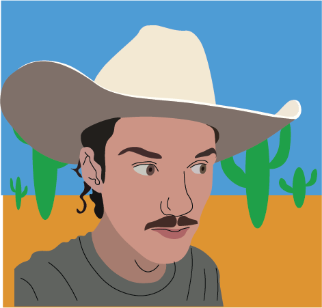

Hey there! My name is Jacob Tillman, I'm a recent grad from the FSU art program. I consider myself a multipotentialite, which means that I have so many interests I never know what to do with myself. I like working with my hands, digital manufacturing processes, coding and biking in the woods. Recently I have been working on building my artistic practice post art school. Feel free to check out my Social_Media page and send me a message!